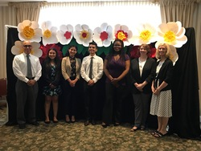

Amrita Khurana
I am currently a 3rd year Biochemistry major with a concentration in Medical Sciences at University of California Riverside. I will be graduating from the university in June of 2021. After graduation, I am planning to pursue a career in the medical field. My goals after graduation are to attend medical school and become a physician, specializing in oncology.
Outside of academia, I am involved with Cope Health Scholars where I volunteer at Riverside Community Hospital once a week. I am also the Director of Special Events for Project RISHI, a nonprofit organization dedicated to promoting hygiene in rural villages in India. I have previously had the role of Underclassmen Representative, and I will soon become titled as a co-president in the following school year. In addition to the Project RISHI organization, I am also on the route of becoming a licensed phlebotomist.
In addition to these current activities that I am involved in, I also have past experience in volunteering at a hospital and job shadowing in medical related offices. In high school, I volunteered at a hospital for a year. This experience taught me the skills of basic patient care and how to assist the nurses as much as possible. I was also in charge of answering the phone and redirecting the call to the proper people. This has helped me improve my communication skills, and it has also allowed me to develop my professionalism. Furthermore, I have experience in job shadowing in several different medical offices. I first job shadowed at an emergency room at San Joaquin Hospital, located in Bakersfield, CA. This allowed me to gain experience and have an underlying look of what working in the emergency department is like. It demonstrated the hectic lives of nurses and doctors, and how quickly they have to act in order to save a patient’s life. However, it also demonstrated that working in the emergency department is not the same as it is portrayed in movies and television shows. Cases in the emergency department can have a wide range, from small, less severe incidents to emergency, life-threatening incidents. Although something significant may show up occasionally, such as a car accident victim, there are also much smaller cases such as patients coming in for a stomach ache. It also showed that there are a lot of slower parts to working in the emergency department, and a lot of the hours are dedicated to patient charting. In addition to job shadowing at the emergency department, I have also job shadowed at Riverwalk Pediatric Clinic. This taught me how dealing with younger patients differs from dealing with older, adult patients. Through this experience, I learned different tactics and methods to handle children. I also job shadowed at a medical clinic, where I followed a family medicine doctor. This experience allowed me to gain insight on how to file patient charts and organize them, as well as see how doctors communicate with their patients in order to provide the best care.
Experience
Health Scholar
• Provided patient care
• Assisted nurses with tasks
• Customer service skills
Director of Special Events
• Planned and organized large scale fundraising events
• Made schedules
Volunteer
• Provided patient care
• Answered phone calls
• Assisted nurses with tasks
Education
UC Riverside
Portfolio
